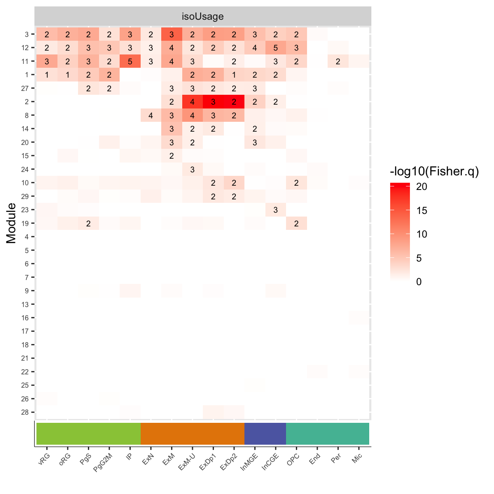

suppressPackageStartupMessages({
library(tidyverse)
library(edgeR)
library(WGCNA)
library(biomaRt)
library(openxlsx)
library(readxl)
library(gprofiler2)
library(gridExtra)
library(cowplot)
library(paletteer)
})
source("code/fisher_overlap.R")
colorVector = c(
"Known" = "#009E73",
"ISM" = "#0072B2",
"ISM_Prefix" = "#005996",
"ISM_Suffix" = "#378bcc",
"NIC" = "#D55E00",
"NNC" = "#E69F00",
"Other" = "#000000"
)
colorVector_ismSplit = colorVector[-2]Figure 4 - Networks Enrichments
Load Data
cts = read_tsv("data/cp_vz_0.75_min_7_recovery_talon_abundance_filtered.tsv.gz")Rows: 214516 Columns: 35
── Column specification ────────────────────────────────────────────────────────
Delimiter: "\t"
chr (7): annot_gene_id, annot_transcript_id, annot_gene_name, annot_transcr...
dbl (28): gene_ID, transcript_ID, n_exons, length, 209_1_VZ, 209_2_VZ, 209_3...
ℹ Use `spec()` to retrieve the full column specification for this data.
ℹ Specify the column types or set `show_col_types = FALSE` to quiet this message.load("ref/EWCE/CellTypeData_DamonNeuralFetalOnly.rda")
celltypemarkers <- openxlsx::read.xlsx('https://www.cell.com/cms/10.1016/j.neuron.2019.06.011/attachment/508ae008-b926-487a-b871-844a12acc1f8/mmc5', sheet='Cluster enriched genes') %>% as_tibble()
celltypemarkers_tableS5 = openxlsx::read.xlsx('https://ars.els-cdn.com/content/image/1-s2.0-S0896627319305616-mmc6.xlsx',sheet=2)
celltypemarkers.bg = read.csv("ref/polioudakis_neuron2020/single_cell_background_MJG221228.csv") %>% dplyr::select(ensembl_gene_id) %>% pull()
celltypemarkers.bg = unique(c(celltypemarkers.bg, celltypemarkers$Ensembl))datExpr.isoCounts = as.data.frame(cts[,12:35])
rownames(datExpr.isoCounts) = cts$annot_transcript_id
datMeta = data.frame(sample=colnames(datExpr.isoCounts))
datMeta$Region = substr(datMeta$sample, 7,9)
datMeta$Subject = substr(datMeta$sample, 1,3)
datMeta$batch = substr(datMeta$sample, 5,5)
datAnno = data.frame(gene_id = cts$annot_gene_id, transcript_id=cts$annot_transcript_id,
transcript_name=cts$annot_transcript_name, length=cts$length,
gene_name = cts$annot_gene_name, ensg = substr(cts$annot_gene_id,1,15), novelty=cts$transcript_novelty)
brainRBPs = read.csv("data/RBP_Data/CSVs/RBP_targets_v5.csv", header=TRUE)
brainRBPs = dplyr::select(brainRBPs, -c(MGI.symbol, ENSMUSG))
encodeRBPs = read.csv("data/RBP_Data/CSVs/RBP_targets_ENCODE.csv", header=TRUE)
encodeRBPs = encodeRBPs %>% filter(cell.type=="HepG2") %>% rename("HGNC.symbol"="hgnc_symbol", "ENSG"="ensembl_gene_id")
rbp_targets = rbind(brainRBPs,encodeRBPs)
rbp_targets$regulation[is.na(rbp_targets$regulation)]=""
mart = useMart("ENSEMBL_MART_ENSEMBL","mmusculus_gene_ensembl")
f = listFilters(mart); a = listAttributes(mart)
featuresToGet = c("ensembl_gene_id", "external_gene_name", "hsapiens_homolog_ensembl_gene", "hsapiens_homolog_associated_gene_name","hsapiens_homolog_orthology_type")
mouseHumanHomologs = getBM(attributes = featuresToGet,mart = mart)
human_mouse_bg = mouseHumanHomologs %>% as_tibble() %>% filter(hsapiens_homolog_orthology_type == "ortholog_one2one") %>% dplyr::select("hsapiens_homolog_ensembl_gene") %>% pull()## Load 3 Networks
datExpr.isoFr = readRDS("data/working/WGCNA/final/datExpr.localIF_batchCorrected_103k.rds")
net.isoFr = readRDS("data/working/WGCNA/final/WGCNA_isoformFraction_top103k_signed_sft14_net.rds")
net.isoFr$colors = labels2colors(net.isoFr$cut2$labels)
names(net.isoFr$colors) = names(net.isoFr$cut2$labels)
net.isoFr$module.number = net.isoFr$cut2$labels
net.isoFr$MEs = moduleEigengenes(t(datExpr.isoFr), colors=net.isoFr$colors)
net.isoFr$kMEtable = signedKME(t(datExpr.isoFr), datME =net.isoFr$MEs$eigengenes,corFnc = "bicor")Warning in bicor(datExpr, datME, , use = "p"): bicor: zero MAD in variable 'x'.
Pearson correlation was used for individual columns with zero (or missing) MAD.datExpr.isoExpr = readRDS(file='data/working/WGCNA/final/datExpr.isoExpr_batchCorrected_92k.rds')
net.isoExpr = readRDS('data/working/WGCNA/final/WGCNA_isoExpression_top92k_signed_sft9_net.rds')
net.isoExpr$colors = labels2colors(net.isoExpr$cut2$labels)
names(net.isoExpr$colors) = names(net.isoExpr$cut2$labels)
net.isoExpr$module.number = net.isoExpr$cut2$labels
net.isoExpr$MEs = moduleEigengenes(t(datExpr.isoExpr), colors=net.isoExpr$colors)
net.isoExpr$kMEtable = signedKME(t(datExpr.isoExpr), datME =net.isoExpr$MEs$eigengenes,corFnc = "bicor")
datExpr.geneExpr = readRDS(file='data/working/WGCNA/final/datExpr.geneExpr_batchCorrected_16k.rds')
net.geneExpr = readRDS(file='data/working/WGCNA/final/WGCNA_geneExpression_top16k_signed_sft14_net.rds')
net.geneExpr$colors = labels2colors(net.geneExpr$cut2$labels)
names(net.geneExpr$colors) = names(net.geneExpr$cut2$labels)
net.geneExpr$module.number = net.geneExpr$cut2$labels
net.geneExpr$MEs = moduleEigengenes(t(datExpr.geneExpr), colors=net.geneExpr$colors)
net.geneExpr$kMEtable = signedKME(t(datExpr.geneExpr), datME =net.geneExpr$MEs$eigengenes,corFnc = "bicor")Network Dendrogram Plots
Fig4A
this_tree = net.isoFr$dendrograms[[1]]
this_anno = datAnno[match(rownames(datExpr.isoFr), datAnno$transcript_id),]
these_mods = data.frame(IsoUsage=net.isoFr$colors)
these_mods$isoExpr = net.isoExpr$colors[this_anno$transcript_id]
these_mods$geneExpr = net.geneExpr$colors[this_anno$gene_id]cell_anno = as.data.frame(matrix('white', nrow=nrow(this_anno), ncol = length(unique(celltypemarkers$Cluster))))
colnames(cell_anno) = sort(unique(celltypemarkers$Cluster))
for(this_cell in unique(celltypemarkers$Cluster)) {
marker_genes = celltypemarkers %>% filter(Cluster == this_cell) %>% dplyr::select(Ensembl) %>% pull()
cell_anno[this_anno$ensg %in% marker_genes, this_cell] = "red"
}rbp.comp = openxlsx::read.xlsx("ref/RBPCompilation_Sundararaman_MolCell2016_TableS1.xlsx", 'Sheet2_1072_RBP_compilation')
these_mods$RBP = 'white'
these_mods$RBP[this_anno$gene_name %in% rbp.comp$Gene.Symbol] = 'black'plotDendroAndColors(this_tree, colors=cbind(these_mods), dendroLabels = F, cex.colorLabels = 0.4)pdf("output/figures/Fig4/Fig4A_IsoExprDendro_wRBPComp.pdf", width=6, height=3.5)
plotDendroAndColors(this_tree, colors=cbind(these_mods), dendroLabels = F, cex.colorLabels = 0.4)
dev.off()quartz_off_screen
2 FigS5A
this_tree = net.geneExpr$dendrograms[[1]]
this_anno = datAnno[match(rownames(datExpr.geneExpr), datAnno$gene_id),]
these_mods = data.frame(geneExpr=net.geneExpr$colors)
these_mods$IsoExpr = net.isoExpr$colors[this_anno$transcript_id]
these_mods$IsoUsage = net.isoFr$colors[this_anno$transcript_id]
cell_anno = as.data.frame(matrix('grey', nrow=nrow(this_anno), ncol = length(unique(celltypemarkers$Cluster))))
colnames(cell_anno) = sort(unique(celltypemarkers$Cluster))
for(this_cell in unique(celltypemarkers$Cluster)) {
marker_genes = celltypemarkers %>% filter(Cluster == this_cell) %>% dplyr::select(Ensembl) %>% pull()
cell_anno[this_anno$ensg %in% marker_genes, this_cell] = "red"
}
rbp.comp = openxlsx::read.xlsx("ref/RBPCompilation_Sundararaman_MolCell2016_TableS1.xlsx", 'Sheet2_1072_RBP_compilation')
these_mods$RBP = 'white'
these_mods$RBP[this_anno$gene_name %in% rbp.comp$Gene.Symbol] = 'black'
plotDendroAndColors(this_tree, colors=cbind(these_mods,cell_anno), dendroLabels = F, cex.colorLabels = 0.4)pdf("output/figures/supplement/FigS5A_Dendro_geneExpr_wCellAnno_wRBP.pdf", width=8,height=6)
plotDendroAndColors(this_tree, colors=cbind(these_mods,cell_anno), dendroLabels = F, cex.colorLabels = 0.8)
dev.off()quartz_off_screen
2 FigS5B
this_tree = net.isoExpr$dendrograms[[1]]
this_anno = datAnno[match(rownames(datExpr.isoExpr), datAnno$transcript_id),]
these_mods = data.frame(isoExpr=net.isoExpr$colors)
these_mods$GeneExpr = net.geneExpr$colors[this_anno$gene_id]
these_mods$IsoUsage = net.isoFr$colors[this_anno$transcript_id]
cell_anno = as.data.frame(matrix('grey', nrow=nrow(this_anno), ncol = length(unique(celltypemarkers$Cluster))))
colnames(cell_anno) = sort(unique(celltypemarkers$Cluster))
for(this_cell in unique(celltypemarkers$Cluster)) {
marker_genes = celltypemarkers %>% filter(Cluster == this_cell) %>% dplyr::select(Ensembl) %>% pull()
cell_anno[this_anno$ensg %in% marker_genes, this_cell] = "red"
}
rbp.comp = openxlsx::read.xlsx("ref/RBPCompilation_Sundararaman_MolCell2016_TableS1.xlsx", 'Sheet2_1072_RBP_compilation')
these_mods$RBP = 'white'
these_mods$RBP[this_anno$gene_name %in% rbp.comp$Gene.Symbol] = 'black'
plotDendroAndColors(this_tree, colors=cbind(these_mods,cell_anno), dendroLabels = F, cex.colorLabels = 0.4)pdf("output/figures/supplement/FigS5B_Dendro_isoExpr_wCellAnno_wRBP.pdf", width=8,height=6)
plotDendroAndColors(this_tree, colors=cbind(these_mods,cell_anno), dendroLabels = F, cex.colorLabels = 0.8)
dev.off()quartz_off_screen
2 FigS5C
this_tree = net.isoFr$dendrograms[[1]]
this_anno = datAnno[match(rownames(datExpr.isoFr), datAnno$transcript_id),]
these_mods = data.frame(isoFr=net.isoFr$colors)
these_mods$GeneExpr = net.geneExpr$colors[this_anno$gene_id]
these_mods$IsoExpr = net.isoExpr$colors[this_anno$transcript_id]
cell_anno = as.data.frame(matrix('grey', nrow=nrow(this_anno), ncol = length(unique(celltypemarkers$Cluster))))
colnames(cell_anno) = sort(unique(celltypemarkers$Cluster))
for(this_cell in unique(celltypemarkers$Cluster)) {
marker_genes = celltypemarkers %>% filter(Cluster == this_cell) %>% dplyr::select(Ensembl) %>% pull()
cell_anno[this_anno$ensg %in% marker_genes, this_cell] = "red"
}
rbp.comp = openxlsx::read.xlsx("ref/RBPCompilation_Sundararaman_MolCell2016_TableS1.xlsx", 'Sheet2_1072_RBP_compilation')
these_mods$RBP = 'white'
these_mods$RBP[this_anno$gene_name %in% rbp.comp$Gene.Symbol] = 'black'
plotDendroAndColors(this_tree, colors=cbind(these_mods,cell_anno), dendroLabels = F, cex.colorLabels = 0.4)pdf("output/figures/supplement/FigS5C_Dendro_isoUsage_wCellAnno_wRBP.pdf", width=8,height=6)
plotDendroAndColors(this_tree, colors=cbind(these_mods,cell_anno), dendroLabels = F, cex.colorLabels = 0.8)
dev.off()quartz_off_screen
2 Compare Networks
Cell-type enrichment
Fisher’s exact
df_fisher.celltype = data.frame()
networks = list("geneExpr" = net.geneExpr$module.number[datAnno$gene_id],
"isoExpr" = net.isoExpr$module.number[datAnno$transcript_id],
"isoUsage" = net.isoFr$module.number[datAnno$transcript_id])
for(this_net in names(networks)) {
all_mods = unique(na.omit(networks[[this_net]][networks[[this_net]] != 0]))
for(this_mod in all_mods) {
mod_genes = unique(na.omit(datAnno$ensg[networks[[this_net]]==this_mod]))
mod_gene.bg = unique(na.omit(datAnno$ensg[!is.na(networks[[this_net]])]))
for(this_cell in unique(celltypemarkers$Cluster)) {
marker_genes = celltypemarkers %>% filter(Cluster == this_cell) %>%
dplyr::select(Ensembl) %>% pull()
enrichment = ORA(mod_genes, marker_genes, mod_gene.bg, celltypemarkers.bg)
df_fisher.celltype = rbind(df_fisher.celltype,
data.frame(net = this_net, mod = this_mod, cell=this_cell,
as.data.frame(t(enrichment))))
}
}
}
for(col in c("OR", "Fisher.p")) df_fisher.celltype[,col] = as.numeric(df_fisher.celltype[,col])
df_fisher.celltype$Fisher.p[df_fisher.celltype$OR<1] = 1
df_fisher.celltype$Fisher.q = p.adjust(df_fisher.celltype$Fisher.p,'fdr')
df_fisher.celltype$label = ""
df_fisher.celltype$label[df_fisher.celltype$Fisher.q<.05] = signif((df_fisher.celltype$OR[df_fisher.celltype$Fisher.q<.05]),1)
df_fisher.celltype$net = factor(df_fisher.celltype$net, levels=c("geneExpr", "isoExpr", "isoUsage"))# Order cell types
order.celltype = c("vRG", "oRG", "PgS", "PgG2M", "IP", "ExN", "ExM", "ExM-U", "ExDp1", "ExDp2", "InMGE", "InCGE", "OPC", "End", "Per", "Mic")
# Order modules
geneExpr_order.celltype = c(2,21,9,16,15,1, # Progenitors
5,12,6,8,10, #Exc Neurons
4,11, #Exc Neurons 2
7,19,14, #In Neurons
3,13,17,18,20,22,23) # Other
isoExpr_order.celltype = c(2,15,41,4,3,11,21, # Progenitors
12,19,23, # Sub progenitors
16, # ExN
1,30,6,20,14,38,5,8,46,34,49,45,31, # Neurons
47,25,26, # Sub neurons
17,42,9,29, # ExM
35,40,53,27, # Sub neurons 2
48,39,13, # In neurons
7,10,18,22,24,28,32,33,36,37,43,44,50,51,52) # Other
isoUsage_order.celltype = c(3,12,11, # Progenitors to neurons
1,27, # Non-migrating
2,8,14, # Neurons
20,15,24,10,29, # Exc neurons
23, # In neurons
19, # OPC
4,5,6,7,9,13,16,17,18,21,22,25,26,28) # Other
df_fisher.celltype_geneExpr = df_fisher.celltype %>% filter(net=="geneExpr")
df_fisher.celltype_geneExpr$mod = factor(df_fisher.celltype_geneExpr$mod, levels=geneExpr_order.celltype)
df_fisher.celltype_isoExpr = df_fisher.celltype %>% filter(net=="isoExpr")
df_fisher.celltype_isoExpr$mod = factor(df_fisher.celltype_isoExpr$mod, levels=isoExpr_order.celltype)
df_fisher.celltype_isoUsage = df_fisher.celltype %>% filter(net=="isoUsage")
df_fisher.celltype_isoUsage$mod = factor(df_fisher.celltype_isoUsage$mod, levels=isoUsage_order.celltype)
# Cell type aggregation
df_fisher.celltype = df_fisher.celltype %>% mutate(cell.type = case_when(cell %in% c('vRG', 'oRG', 'PgS', 'PgG2M', 'IP') ~ 'Progenitor',
cell %in% c('ExN', 'ExM', 'ExM-U', 'ExDp1', 'ExDp2') ~ 'Exc Neuron',
cell %in% c('InMGE', 'InCGE') ~ 'Inh Neuron',
cell %in% c('OPC', 'End', 'Per', 'Mic') ~ 'Other'))FigS6A
CellType_ColorBar = ggplot(df_fisher.celltype %>% filter(net=="geneExpr",mod==1),aes(x=factor(cell, levels=order.celltype))) +
geom_tile(aes(y=factor(1),fill=cell.type)) +
# geom_point(aes(y=factor(1), shape=data.type),position=position_dodge2(width=1),size=0.5) + scale_shape_manual(values = c(1:9)) +
# scale_x_discrete(labels=sapply(strsplit(levels(df_fisher_rbp$target), "_"), "[[",1)) +
theme_bw() +
theme(axis.text.y = element_blank(),
axis.ticks.y=element_blank(),
axis.text.x = element_text(angle=45,vjust=1, hjust=1, size=6),
legend.key.size=unit(0.3,'cm'), legend.text=element_text(size=6), legend.title=element_text(size=6),
plot.margin=unit(c(-21,5,5,5),"pt"), legend.position=c(0.5,-2.5), legend.box="horizontal", legend.direction="horizontal",
panel.grid.major=element_blank(), panel.grid.minor=element_blank(), panel.border=element_blank(), axis.line=element_line(color="black", size=0.2)) +
labs(x='', y='') + paletteer::scale_fill_paletteer_d("rcartocolor::Vivid") + guides(fill=guide_legend(order=1, nrow=1))
plot_gE = ggplot(df_fisher.celltype_geneExpr,aes(y=factor(mod, levels=rev(levels(mod))), x=factor(cell, levels=order.celltype), label=label, fill=-log10(Fisher.q))) +
geom_tile() + facet_wrap(~net, scales='free') + geom_text(size=2.5)+ scale_fill_gradient(low='white',high='red') +
theme(axis.text.x = element_blank(), axis.text.y = element_text(size=6), axis.ticks.x=element_blank()) +
labs(x='Cell Type', y='Module')
plot_grid(plot_gE,CellType_ColorBar, align="v", ncol=1, axis="lr", rel_heights=c(9,1))pdf("output/figures/supplement/FigS6A_geneExpr_ModOrdered.pdf", height=6, width=6)
plot_grid(plot_gE,CellType_ColorBar, align="v", ncol=1, axis="lr", rel_heights=c(9,1))
dev.off()quartz_off_screen
2 FigS6B
plot_iE = ggplot(df_fisher.celltype_isoExpr,aes(y=factor(mod, levels=rev(levels(mod))), x=factor(cell, levels=order.celltype), label=label, fill=-log10(Fisher.q))) +
geom_tile() + facet_wrap(~net, scales='free') + geom_text(size=2.5)+ scale_fill_gradient(low='white',high='red') +
theme(axis.text.x = element_blank(), axis.text.y = element_text(size=6), axis.ticks.x=element_blank()) +
labs(x='Cell Type', y='Module')
plot_grid(plot_iE,CellType_ColorBar, align="v", ncol=1, axis="lr", rel_heights=c(9,1))pdf("output/figures/supplement/FigS6B_isoExpr_ModOrdered.pdf", height=6, width=6)
plot_grid(plot_iE,CellType_ColorBar, align="v", ncol=1, axis="lr", rel_heights=c(9,1))
dev.off()quartz_off_screen
2 FigS6C
plot_iU = ggplot(df_fisher.celltype_isoUsage,aes(y=factor(mod, levels=rev(levels(mod))), x=factor(cell, levels=order.celltype), label=label, fill=-log10(Fisher.q))) +
geom_tile() + facet_wrap(~net, scales='free') + geom_text(size=2.5)+ scale_fill_gradient(low='white',high='red') +
theme(axis.text.x = element_blank(), axis.text.y = element_text(size=6), axis.ticks.x=element_blank()) +
labs(x='Cell Type', y='Module')
plot_grid(plot_iU,CellType_ColorBar, align="v", ncol=1, axis="lr", rel_heights=c(9,1))
pdf("output/figures/supplement/FigS6C_isoUsage_ModOrdered.pdf", height=6, width=6)
plot_grid(plot_iU,CellType_ColorBar, align="v", ncol=1, axis="lr", rel_heights=c(9,1))
dev.off()quartz_off_screen
2 Rare Var Enrichments
Gene level
geneAnno = rtracklayer::import("ref/gencode.v33lift37.annotation.gtf.gz") %>% as_tibble() %>% filter(type=='gene')
geneAnno$ensg = substr(geneAnno$gene_id,1,15)
fu=openxlsx::read.xlsx(('https://static-content.springer.com/esm/art%3A10.1038%2Fs41588-022-01104-0/MediaObjects/41588_2022_1104_MOESM3_ESM.xlsx'),'Supplementary Table 11')
fu$p_TADA_ASD[fu$p_TADA_ASD==0] = min(fu$p_TADA_ASD[fu$p_TADA_ASD >0],na.rm=T)
fu$p_TADA_NDD[fu$p_TADA_NDD==0] = min(fu$p_TADA_NDD[fu$p_TADA_NDD >0],na.rm=T)
geneAnno.logit = data.frame(ASD_fuTADA= -log10(fu$p_TADA_ASD)[match(geneAnno$ensg, fu$gene_id)])
geneAnno.logit$NDD_fuTADA = -log10(fu$p_TADA_NDD)[match(geneAnno$ensg, fu$gene_id)]
SCZ.schema = read_tsv('ref/risk_genes/SCHEMA_gene_results.tsv')Warning: One or more parsing issues, see `problems()` for detailsRows: 18321 Columns: 26
── Column specification ────────────────────────────────────────────────────────
Delimiter: "\t"
chr (8): gene_id, group, OR (PTV), OR (Class I), OR (Class II), OR (PTV) up...
dbl (16): Case PTV, Ctrl PTV, Case mis3, Ctrl mis3, Case mis2, Ctrl mis2, P ...
lgl (2): De novo mis3, De novo mis2
ℹ Use `spec()` to retrieve the full column specification for this data.
ℹ Specify the column types or set `show_col_types = FALSE` to quiet this message.geneAnno.logit$SCZ_schema = -log10(SCZ.schema$`P meta`[match(geneAnno$ensg, SCZ.schema$gene_id)])
BIP.bipex = read_tsv('ref/risk_genes/BipEx_gene_results.tsv') %>% filter(group=="Bipolar Disorder")Rows: 119958 Columns: 20
── Column specification ────────────────────────────────────────────────────────
Delimiter: "\t"
chr (4): gene_id, group, damaging_missense_fisher_gnom_non_psych_OR, ptv_fi...
dbl (16): n_cases, n_controls, damaging_missense_case_count, damaging_missen...
ℹ Use `spec()` to retrieve the full column specification for this data.
ℹ Specify the column types or set `show_col_types = FALSE` to quiet this message.geneAnno.logit$BIP.bipex = -log10(BIP.bipex$ptv_fisher_gnom_non_psych_pval[match(geneAnno$ensg,BIP.bipex$gene_id)])
EPI.epi25 = read_tsv('ref/risk_genes/Epi25_gene_results.tsv') %>% filter(group=="EPI")Rows: 71456 Columns: 12
── Column specification ────────────────────────────────────────────────────────
Delimiter: "\t"
chr (2): gene_id, group
dbl (9): xcase_lof, xctrl_lof, pval_lof, xcase_mpc, xctrl_mpc, pval_mpc, xca...
lgl (1): pval_infrIndel
ℹ Use `spec()` to retrieve the full column specification for this data.
ℹ Specify the column types or set `show_col_types = FALSE` to quiet this message.geneAnno.logit$EPI.epi25 = -log10(EPI.epi25$pval[match(geneAnno$ensg,EPI.epi25$gene_id)])
networks = data.frame(net="isoExpr", module = net.isoExpr$module.number, transcript_id = names(net.isoExpr$colors))
networks = rbind(networks, data.frame(net='isoUsage', module = net.isoFr$module.number, transcript_id = names(net.isoFr$colors)))
networks$gene_id = datAnno$gene_id[match(networks$transcript_id, datAnno$transcript_id)]
networks = rbind(networks, data.frame(net='geneExpr', module = net.geneExpr$module.number, transcript_id = NA, gene_id=names(net.geneExpr$colors)))
networks$ensg = substr(networks$gene_id,1,15)
df_logit.gene = data.frame()
binaryVec = rep(NA, times=nrow(geneAnno))
names(binaryVec) = geneAnno$ensg
for(this_net in unique(networks$net)) {
all_mods = unique(na.omit(networks$module[networks$net ==this_net & networks$module!=0]))
for(this_mod in all_mods) {
this_binary_vec = binaryVec
this_binary_vec[names(this_binary_vec) %in% networks$ensg[networks$net==this_net]] = 0
this_binary_vec[names(this_binary_vec) %in% networks$ensg[networks$net==this_net & networks$module==this_mod]] = 1
for(this_rare_var in colnames(geneAnno.logit)) {
this_glm = summary(glm(this_binary_vec ~ geneAnno.logit[,this_rare_var] + width + log10(width), data=geneAnno, family='binomial'))
df_logit.gene = rbind(df_logit.gene, data.frame(net = this_net, mod = this_mod, set = this_rare_var, t(this_glm$coefficients[2,])))
}
}
}Warning: glm.fit: fitted probabilities numerically 0 or 1 occurredWarning: glm.fit: fitted probabilities numerically 0 or 1 occurreddf_logit.gene$OR = exp(df_logit.gene$Estimate)
df_logit.gene$P = df_logit.gene$Pr...z..
df_logit.gene$P[df_logit.gene$OR < 1] = 1
df_logit.gene$Q = p.adjust(df_logit.gene$P,'fdr')
df_logit.gene$label = signif((df_logit.gene$OR),3)
df_logit.gene$label[df_logit.gene$Q>.05] = ""
df_logit.gene$mod = factor(df_logit.gene$mod,levels=c(100:1))df_logit.gene_geneExpr = df_logit.gene %>% filter(net=="geneExpr")
df_logit.gene_geneExpr$mod = factor(df_logit.gene_geneExpr$mod, levels=geneExpr_order.celltype)
df_logit.gene_isoExpr = df_logit.gene %>% filter(net=="isoExpr")
df_logit.gene_isoExpr$mod = factor(df_logit.gene_isoExpr$mod, levels=isoExpr_order.celltype)
df_logit.gene_isoUsage = df_logit.gene %>% filter(net=="isoUsage")
df_logit.gene_isoUsage$mod = factor(df_logit.gene_isoUsage$mod, levels=isoUsage_order.celltype)
# Module aggregation
df_logit.gene_geneExpr = df_logit.gene_geneExpr %>% mutate(mod.group = case_when(mod %in% c(2,21,9,16,15,1) ~ 'Progenitor',
mod %in% c(5,12,6,8,10,4,11) ~ 'Exc Neuron',
mod %in% c(7,19) ~ 'Inh Neuron',
mod %in% c(14,3,13,17,18,20,22,23) ~ 'Other'))
df_logit.gene_isoExpr = df_logit.gene_isoExpr %>% mutate(mod.group = case_when(mod %in% c(2,15,41,4,3,11,21,12,19,23,26) ~ 'Progenitor',
mod %in% c(16,1,30,6,20,14,38,5,8,46,34,49,45,31,47,25,17,42,9,29,35,40,53,27,48) ~ 'Exc Neuron',
mod %in% c(39,13,7) ~ 'Inh Neuron',
mod %in% c(10,18,22,24,28,32,33,36,37,43,44,50,51,52) ~ 'Other'))
df_logit.gene_isoUsage = df_logit.gene_isoUsage %>% mutate(mod.group = case_when(mod %in% c(27,19) ~ 'Progenitor',
mod %in% c(2,8,14,20,15,24,10,29) ~ 'Exc Neuron',
mod %in% c(23) ~ 'Inh Neuron',
mod %in% c(4,5,6,7,9,13,16,17,18,21,22,25,26,28) ~ 'Other',
mod %in% c(3,12,11,1) ~ 'Prog/Neur'))
# Order of Rare Vars
order.rarevar = c("NDD_fuTADA", "ASD_fuTADA", "SCZ_schema", "BIP.bipex", "EPI.epi25")ModGroup_ColorBar.gE = ggplot(df_logit.gene_geneExpr,aes(x=factor(mod, levels = rev(levels(mod))))) +
geom_tile(aes(y=factor(1),fill=mod.group)) +
# geom_point(aes(y=factor(1), shape=data.type),position=position_dodge2(width=1),size=0.5) + scale_shape_manual(values = c(1:9)) +
theme_bw() +
theme(axis.text.x = element_blank(),
axis.ticks.x = element_blank(),
axis.text.y = element_text(angle=0,vjust=1, hjust=1, size=5),
# legend.key.size=unit(0.3,'cm'), legend.text=element_text(size=3), legend.title=element_text(size=4),
plot.margin=unit(c(5,-10,5,5),"pt"), legend.position=c(-3,0.8),
# legend.box="vertical", legend.direction="vertical",
panel.grid.major=element_blank(), panel.grid.minor=element_blank(), panel.border=element_blank(), axis.line=element_line(color="black", size=0.2)) +
scale_y_discrete(labels=rev(levels(df_logit.gene_geneExpr$mod))) +
labs(x='Module', y='') + paletteer::scale_fill_paletteer_d("rcartocolor::Vivid") + guides(fill=guide_legend(reverse=TRUE)) + coord_flip()
legend.gE = get_legend(ModGroup_ColorBar.gE + theme(legend.position=c(2.5,0.5), legend.key.size=unit(0.3,'cm'), legend.text=element_text(size=3), legend.title=element_text(size=4),
legend.box="horizontal", legend.direction="horizontal"))
plot_logit.gE = ggplot(df_logit.gene_geneExpr,aes(y=factor(mod, levels=rev(levels(mod))), x=factor(set, levels=order.rarevar), label=label, fill=-log10(Q))) +
# scale_x_discrete(labels=sapply(strsplit(levels(df_fisher_rbp$target), "_"), "[[",1)) +
geom_tile() +
facet_wrap(~net, scales='free') +
geom_text(size=1) + scale_fill_gradient(low='white',high='red') +
theme(axis.text.x = element_text(angle=45,hjust=1, size=4), axis.text.y = element_blank(), axis.title = element_text(size=5),
axis.ticks.y = element_blank(), plot.margin=unit(c(5,5,5,-10),"pt"),
legend.key.size=unit(0.25,'cm'), legend.text=element_text(size=5), legend.title=element_text(size=5)) +
labs(x='Rare Variant Set', y='')
ModGroup_ColorBar.iE = ggplot(df_logit.gene_isoExpr,aes(x=factor(mod, levels = rev(levels(mod))))) +
geom_tile(aes(y=factor(1),fill=mod.group)) +
# geom_point(aes(y=factor(1), shape=data.type),position=position_dodge2(width=1),size=0.5) + scale_shape_manual(values = c(1:9)) +
theme_bw() +
theme(axis.text.x = element_blank(),
axis.ticks.x = element_blank(),
axis.text.y = element_text(angle=0,vjust=1, hjust=1, size=4),
# legend.key.size=unit(0.3,'cm'), legend.text=element_text(size=6), legend.title=element_text(size=6),
plot.margin=unit(c(5,-10,5,5),"pt"), legend.position=c(0.5,-2.5),
# legend.box="vertical", legend.direction="vertical",
panel.grid.major=element_blank(), panel.grid.minor=element_blank(), panel.border=element_blank(), axis.line=element_line(color="black", size=0.2)) +
scale_y_discrete(labels=rev(levels(df_logit.gene_geneExpr$mod))) +
labs(x='Module', y='') + paletteer::scale_fill_paletteer_d("rcartocolor::Vivid") + guides(fill=guide_legend(order=1, nrow=1)) + coord_flip()
legend.iE = get_legend(ModGroup_ColorBar.iE + theme(legend.position=c(2.5,0.5), legend.key.size=unit(0.3,'cm'), legend.text=element_text(size=3), legend.title=element_text(size=4),
legend.box="horizontal", legend.direction="horizontal"))
plot_logit.iE = ggplot(df_logit.gene_isoExpr,aes(y=factor(mod, levels=rev(levels(mod))), x=factor(set, levels=order.rarevar), label=label, fill=-log10(Q))) +
# scale_x_discrete(labels=sapply(strsplit(levels(df_fisher_rbp$target), "_"), "[[",1)) +
geom_tile() + facet_wrap(~net, scales='free') + geom_text(size=1) + scale_fill_gradient(low='white',high='red') +
theme(axis.text.x = element_text(angle=45,hjust=1, size=4), axis.text.y = element_blank(), axis.title = element_text(size=5),
axis.ticks.y = element_blank(), plot.margin=unit(c(5,5,5,-10),"pt"),
legend.key.size=unit(0.25,'cm'), legend.text=element_text(size=5), legend.title=element_text(size=5)) +
labs(x='Rare Variant Set', y='')
ModGroup_ColorBar.iU = ggplot(df_logit.gene_isoUsage,aes(x=factor(mod, levels = rev(levels(mod))))) +
geom_tile(aes(y=factor(1),fill=mod.group)) +
# geom_point(aes(y=factor(1), shape=data.type),position=position_dodge2(width=1),size=0.5) + scale_shape_manual(values = c(1:9)) +
theme_bw() +
theme(axis.text.x = element_blank(),
axis.ticks.x = element_blank(),
axis.text.y = element_text(angle=0,vjust=1, hjust=1, size=4),
# legend.key.size=unit(0.3,'cm'), legend.text=element_text(size=6), legend.title=element_text(size=6),
plot.margin=unit(c(5,-10,5,5),"pt"), legend.position=c(0.5,-2.5),
# legend.box="vertical", legend.direction="vertical",
panel.grid.major=element_blank(), panel.grid.minor=element_blank(), panel.border=element_blank(), axis.line=element_line(color="black", size=0.2)) +
scale_y_discrete(labels=rev(levels(df_logit.gene_geneExpr$mod))) +
labs(x='Module', y='') + paletteer::scale_fill_paletteer_d("rcartocolor::Vivid") + guides(fill=guide_legend(order=1, nrow=1)) + coord_flip()
legend.iU = get_legend(ModGroup_ColorBar.iU + theme(legend.position=c(2.5,0.5), legend.key.size=unit(0.3,'cm'), legend.text=element_text(size=3), legend.title=element_text(size=4),
legend.box="horizontal", legend.direction="horizontal"))
plot_logit.iU = ggplot(df_logit.gene_isoUsage,aes(y=factor(mod, levels=rev(levels(mod))), x=factor(set, levels=order.rarevar), label=label, fill=-log10(Q))) +
# scale_x_discrete(labels=sapply(strsplit(levels(df_fisher_rbp$target), "_"), "[[",1)) +
geom_tile() + facet_wrap(~net, scales='free') + geom_text(size=1) + scale_fill_gradient(low='white',high='red') +
theme(axis.text.x = element_text(angle=45,hjust=1, size=4), axis.text.y = element_blank(), axis.title = element_text(size=5),
axis.ticks.y = element_blank(), plot.margin=unit(c(5,5,5,-10),"pt"),
legend.key.size=unit(0.25,'cm'), legend.text=element_text(size=5), legend.title=element_text(size=5)) +
labs(x='Rare Variant Set', y='')
FigS5_C_geneExpr = plot_grid(ModGroup_ColorBar.gE,plot_logit.gE, legend.gE, align="h", nrow=2, axis="bt", rel_widths=c(1,4), rel_heights=c(20,1))
FigS5_C_isoExpr = plot_grid(ModGroup_ColorBar.iE,plot_logit.iE, legend.iE, align="h", nrow=2, axis="bt", rel_widths=c(1,4), rel_heights=c(20,1))
FigS5_C_isoUsage = plot_grid(ModGroup_ColorBar.iU,plot_logit.iU, legend.iU, align="h", nrow=2, axis="bt", rel_widths=c(1,4), rel_heights=c(20,1))
plot_grid(FigS5_C_geneExpr,FigS5_C_isoExpr,FigS5_C_isoUsage, align="h", nrow=1, axis="bt", rel_widths=c(1,1,1))GWAS Enrichments
df_gwas = data.frame()
gwas = dir("data/LDSC_cell_type_specific/networks/isoExpr_cts_result/", pattern="txt")
for(this_gwas in gwas) {
this_ldsc = read.table(paste0("data/LDSC_cell_type_specific/networks/isoExpr_cts_result/",this_gwas),header = T)
colnames(this_ldsc)[1] = 'module'
this_ldsc$gwas = gsub(".cell_type_results.txt", "", this_gwas)
this_ldsc$net = 'isoExpr'
df_gwas = rbind(df_gwas, this_ldsc)
}
gwas = dir("data/LDSC_cell_type_specific/networks/isoUsage_cts_result/", pattern="txt")
for(this_gwas in gwas) {
this_ldsc = read.table(paste0("data/LDSC_cell_type_specific/networks/isoUsage_cts_result/",this_gwas),header = T)
colnames(this_ldsc)[1] = 'module'
this_ldsc$gwas = gsub(".cell_type_results.txt", "", this_gwas)
this_ldsc$net = 'isoUsage'
df_gwas = rbind(df_gwas, this_ldsc)
}
gwas = dir("data/LDSC_cell_type_specific/networks/geneExpr_cts_result/", pattern="txt")
for(this_gwas in gwas) {
this_ldsc = read.table(paste0("data/LDSC_cell_type_specific/networks/geneExpr_cts_result/",this_gwas),header = T)
colnames(this_ldsc)[1] = 'module'
this_ldsc$gwas = gsub(".cell_type_results.txt", "", this_gwas)
this_ldsc$net = 'geneExpr'
df_gwas = rbind(df_gwas, this_ldsc)
}
df_gwas$fdr = p.adjust(df_gwas$Coefficient_P_value,'fdr')
df_gwas$mod = as.numeric(gsub("M", "", unlist(lapply(strsplit(unlist(lapply(strsplit(df_gwas$module, "[.]"),'[',2)), '_'),'[',1))))
df_gwas$Zscore = df_gwas$Coefficient/df_gwas$Coefficient_std_errorRBP Enrichments
networks = list("net.isoExpr" = net.isoExpr$colors[datAnno$transcript_id],
"net.isoFr" = net.isoFr$colors[datAnno$transcript_id],
"net.geneExpr" = net.geneExpr$colors[datAnno$gene_id])
df_fisher_rbp = data.frame()
for(this_net in names(networks)) {
all_mods = unique(na.omit(networks[[this_net]][networks[[this_net]] != 'grey']))
for(this_mod in all_mods) {
if(this_net == "net.geneExpr") {
modGenes = substr(unique(na.omit(names(networks[[this_net]][networks[[this_net]] == this_mod]))), 1,15)
modGeneg.bg = substr(unique(na.omit(names(networks[[this_net]]))),1,15)
} else {
modTx = unique(na.omit(names(networks[[this_net]][networks[[this_net]] == this_mod])))
modGenes = unique(datAnno$ensg[match(modTx, datAnno$transcript_id)])
modGeneg.bg = unique(datAnno$ensg[match(names(networks[[this_net]]), datAnno$transcript_id)])
}
for(this_dataset in unique(rbp_targets$dataset.id)) {
this_rbp = rbp_targets %>% filter(dataset.id == this_dataset) %>% mutate(target = paste0(RBP, "_", data.type, "_", cell.type)) %>% dplyr::select(target) %>% unique() %>% pull()
target_genes = rbp_targets %>% filter(dataset.id == this_dataset) %>% dplyr::select(ENSG) %>% pull()
if(grepl("Human",this_rbp)) {
this_or = ORA(modGenes, target_genes, unique(datAnno$ensg), unique(datAnno$ensg))
} else {
this_or = ORA(modGenes, target_genes, unique(datAnno$ensg), human_mouse_bg)
}
df_fisher_rbp = rbind(df_fisher_rbp, data.frame(net = this_net, mod = this_mod, dataset = this_dataset, target = this_rbp, t(this_or)))
}
}}
# Order of curated RBPs
order.brainRBPs = read_excel("data/RBP_Data/curatedRBPs_order.xlsx") %>% as_tibble()
# Order Encode by Target Regions
order.Encode.TarReg = read_excel("data/RBP_Data/ENCODE_vanNostrand_NatMeth2016_Fig2a_order.xlsx", sheet=2)
order.Encode.TarReg = order.Encode.TarReg %>% filter(name %in% df_fisher_rbp$target)
order.RBPs = rbind(order.brainRBPs, order.Encode.TarReg)
df_fisher_rbp$OR = as.numeric(df_fisher_rbp$OR)
df_fisher_rbp$Fisher.p[df_fisher_rbp$OR<1] = 1
df_fisher_rbp$Fisher.p = p.adjust(as.numeric(df_fisher_rbp$Fisher.p),'fdr')
df_fisher_rbp$label = signif(df_fisher_rbp$OR,2)
df_fisher_rbp$label[df_fisher_rbp$Fisher.p>.001] = ''
df_fisher_rbp$target.region = order.RBPs$target.region[match(df_fisher_rbp$target, order.RBPs$name)]
df_fisher_rbp$data.type = rbp_targets$data.type[match(df_fisher_rbp$dataset, rbp_targets$dataset.id)]
df_fisher_rbp$cell.type = rbp_targets$cell.type[match(df_fisher_rbp$dataset, rbp_targets$dataset.id)]
df_fisher_rbp<-df_fisher_rbp %>% left_join(data.frame(mod.num = 1:100, mod=labels2colors(1:100)))Joining, by = "mod"df_fisher_rbp$target = factor(df_fisher_rbp$target, levels=order.RBPs$name)TableS4D
TableS4D <- df_fisher_rbp %>% mutate(module.color = mod, mod = paste0(net,"M.",mod.num,"_",mod))
write_tsv(TableS4D, file="output/tables/TableS4D_fisherRBP.tsv")FigS6B
# Order of modules
df_fisher_rbp.geneExpr = df_fisher_rbp %>% filter(net=="net.geneExpr")
df_fisher_rbp.geneExpr$mod.num = factor(df_fisher_rbp.geneExpr$mod.num, levels=geneExpr_order.celltype)
df_fisher_rbp.isoExpr = df_fisher_rbp %>% filter(net=="net.isoExpr")
df_fisher_rbp.isoExpr$mod.num = factor(df_fisher_rbp.isoExpr$mod.num, levels=isoExpr_order.celltype)
df_fisher_rbp.isoUsage = df_fisher_rbp %>% filter(net=="net.isoFr")
df_fisher_rbp.isoUsage$mod.num = factor(df_fisher_rbp.isoUsage$mod.num, levels=isoUsage_order.celltype)
# Color bar for RBP TargetRegions
RBP_ColorBar = ggplot(df_fisher_rbp %>% filter(net=="net.isoFr",mod.num==1),aes(x=target, label=target.region)) +
# geom_tile(aes(y=factor(1),fill=data.type)) +
geom_tile(aes(y=factor(1),fill=target.region)) +
# geom_point(aes(y=factor(1), shape=target.region),position=position_dodge2(width=1),size=0.5) + scale_shape_manual(values = c(1:9)) +
geom_point(aes(y=factor(1), shape=data.type),position=position_dodge2(width=1),size=0.5) + scale_shape_manual(values = c(1:9)) +
# scale_x_discrete(labels=df_fisher$RBP) +
scale_x_discrete(labels=sapply(strsplit(levels(df_fisher_rbp$target), "_"), "[[",1)) +
theme_bw() +
theme(axis.text.y = element_blank(),
axis.ticks.y=element_blank(),
axis.text.x = element_text(angle=45,vjust=1, hjust=1, size=5),
legend.key.size=unit(0.3,'cm'), legend.text=element_text(size=6), legend.title=element_text(size=6),
plot.margin=unit(c(-21,5,5,5),"pt"), legend.position=c(0.5,-2.5), legend.box="horizontal", legend.direction="horizontal",
panel.grid.major=element_blank(), panel.grid.minor=element_blank(), panel.border=element_blank(), axis.line=element_line(color="black", size=0.2)) +
labs(x='', y='') + paletteer::scale_fill_paletteer_d("rcartocolor::Vivid") + guides(fill=guide_legend(order=1, nrow=1))
plot_geneExpr = ggplot(df_fisher_rbp.geneExpr,aes(y=factor(mod.num, levels=rev(levels(mod.num))), x=target, label=label, fill=-log10(Fisher.p))) +
scale_x_discrete(labels=sapply(strsplit(levels(df_fisher_rbp$target), "_"), "[[",1)) +
geom_tile() +
# facet_wrap(~net, scales='free') +
geom_text(size=1) + scale_fill_gradient(low='white',high='red', limits=c(0,200)) +
theme(axis.text.x=element_blank(), axis.ticks.x=element_blank(), axis.text.y=element_blank(), axis.ticks.y=element_blank()) + labs(x='', y='')
col1_gE = plot_grid(plot_geneExpr,RBP_ColorBar, align="v", ncol=1, axis="lr", rel_heights=c(9,1))
col2_gE = plot_grid(ModGroup_ColorBar.gE + theme(plot.margin=unit(c(5,-20,5,5),"pt")),NULL, ncol=1, rel_heights=c(9,1))
plot_grid(col2_gE, col1_gE, ncol=2, rel_widths=c(1,20))pdf("output/figures/supplement/FigS6B_geneExpr_ModOrdered.pdf", height=6, width=20)
plot_grid(col2_gE, col1_gE, ncol=2, rel_widths=c(1,20))
dev.off()quartz_off_screen
2 plot_isoExpr = ggplot(df_fisher_rbp.isoExpr,aes(y=factor(mod.num, levels=rev(levels(mod.num))), x=target, label=label, fill=-log10(Fisher.p))) +
scale_x_discrete(labels=sapply(strsplit(levels(df_fisher_rbp$target), "_"), "[[",1)) +
geom_tile() +
# facet_wrap(~net, scales='free') +
geom_text(size=1) + scale_fill_gradient(low='white',high='red', limits=c(0,200)) +
theme(axis.text.x=element_blank(), axis.ticks.x=element_blank(), axis.text.y=element_blank(), axis.ticks.y=element_blank()) + labs(x='', y='')
col1_iE = plot_grid(plot_isoExpr,RBP_ColorBar, align="v", ncol=1, axis="lr", rel_heights=c(9,1))
col2_iE = plot_grid(ModGroup_ColorBar.iE + theme(plot.margin=unit(c(5,-20,5,5),"pt")),NULL, ncol=1, rel_heights=c(9,1))
plot_grid(col2_iE, col1_iE, ncol=2, rel_widths=c(1,20))
pdf("output/figures/supplement/FigS6B_isoExpr_ModOrdered.pdf", height=6, width=20)
plot_grid(col2_iE, col1_iE, ncol=2, rel_widths=c(1,20))
dev.off()quartz_off_screen
2 plot_isoUsage = ggplot(df_fisher_rbp.isoUsage,aes(y=factor(mod.num, levels=rev(levels(mod.num))), x=target, label=label, fill=-log10(Fisher.p))) +
scale_x_discrete(labels=sapply(strsplit(levels(df_fisher_rbp$target), "_"), "[[",1)) +
geom_tile() +
# facet_wrap(~net, scales='free') +
geom_text(size=1) + scale_fill_gradient(low='white',high='red', limits=c(0,200)) +
theme(axis.text.x=element_blank(), axis.ticks.x=element_blank(), axis.text.y=element_blank(), axis.ticks.y=element_blank()) + labs(x='', y='')
col1_iU = plot_grid(plot_isoUsage,RBP_ColorBar, align="v", ncol=1, axis="lr", rel_heights=c(9,1))
col2_iU = plot_grid(ModGroup_ColorBar.iU + theme(plot.margin=unit(c(5,-20,5,5),"pt")),NULL, ncol=1, rel_heights=c(9,1))
plot_grid(col2_iU, col1_iU, ncol=2, rel_widths=c(1,20))pdf("output/figures/supplement/FigS6B_isoUsage_ModOrdered.pdf", height=6, width=20)
plot_grid(col2_iU, col1_iU, ncol=2, rel_widths=c(1,20))
dev.off()quartz_off_screen
2 Fig4B
Fig4B_density.rbp = ggplot(df_fisher_rbp %>% filter(Fisher.p <= .001), aes(x=-log10(Fisher.p), fill=net)) +
geom_density(alpha=0.25, size=0.2, position="identity", stat='bin', binwidth=15) +
scale_y_log10() +
theme_bw() + theme(panel.grid.major=element_blank(), panel.grid.minor=element_blank(), axis.text = element_text(size=5), axis.title = element_text(size=8),
legend.position="top", legend.key.size = unit(0.25,'cm'), legend.title=element_text(size=5)) +
labs(y='RBP enrichments', x='-log10(pValue)')
Fig4B_density.rbpWarning: Transformation introduced infinite values in continuous y-axispdf("output/figures/Fig4/Fig4B_density_RBPEnrich.pdf", height=2, width=3)
Fig4B_density.rbpWarning: Transformation introduced infinite values in continuous y-axisdev.off()quartz_off_screen
2 Fig4B_density.celltype = ggplot(df_fisher.celltype %>% filter(Fisher.q <= .001), aes(x=-log10(Fisher.q), fill=net)) +
geom_density(alpha=0.25, size=0.2, position="identity", stat='bin', binwidth=15) +
scale_y_log10() +
theme_bw() + theme(panel.grid.major=element_blank(), panel.grid.minor=element_blank(), axis.text = element_text(size=5), axis.title = element_text(size=8),
legend.position="top", legend.key.size = unit(0.25,'cm'), legend.title=element_text(size=5)) +
labs(y='Cell Type enrichments', x='-log10(pValue)')
Fig4B_density.celltypeWarning: Transformation introduced infinite values in continuous y-axispdf("output/figures/Fig4/Fig4B_density_CellTypeEnrich.pdf", height=2, width=3)
Fig4B_density.celltypeWarning: Transformation introduced infinite values in continuous y-axisdev.off()quartz_off_screen
2 Annotate Individual Modules
Fig4C,D and FigS7
IsoUsage Network
this_datExpr = datExpr.isoFr
this_net = net.isoFr
this_net$module = paste0("M", this_net$module.number, ".", labels2colors(this_net$module.number))
fileBaseNet="datExpr.localIF_batchCorrected_103k_byTargetRegion_Reordered_RBPModColor"
#Generate MEs and kME table for Network
MEs = moduleEigengenes(t(this_datExpr), colors=this_net$module.number)
kMEtable = signedKME(t(this_datExpr), datME =MEs$eigengenes,corFnc = "bicor")
this_anno = datAnno[match(rownames(this_datExpr), datAnno$transcript_id),]
idx = grep("^TALON", this_anno$transcript_name)
this_anno$transcript_name[idx] = paste0(this_anno$gene_name[idx], '_', this_anno$transcript_name[idx])
cell_anno = as.data.frame(matrix('grey', nrow=nrow(this_anno), ncol = length(unique(celltypemarkers$Cluster))))
colnames(cell_anno) = sort(unique(celltypemarkers$Cluster))
for(this_cell in unique(celltypemarkers$Cluster)) {
marker_genes = celltypemarkers %>% filter(Cluster == this_cell) %>% dplyr::select(Ensembl) %>% pull()
cell_anno[this_anno$ensg %in% marker_genes, this_cell] = "red"
}
tidyMods = tibble(transcript_id = rownames(kMEtable), module=this_net$module, module.color = this_net$colors, module.number=this_net$module.number, kMEtable)
tidyMods <- tidyMods %>% pivot_longer(-c(transcript_id,module,module.color,module.number), names_to = "kME_to_module", values_to = 'kME') %>% mutate(kMEtoMod = gsub("kME", "", kME_to_module)) %>% filter(module!=0, module != "grey", kMEtoMod !='grey', kMEtoMod != 0) %>% dplyr::select(-kME_to_module)
tidyMods <- tidyMods %>% left_join(this_anno)Joining, by = "transcript_id"tidyMods %>% group_by(module) %>% filter(kMEtoMod == module.number) %>% slice_max(kME,n=10)
pdf(file=paste0("output/figures/Fig4/", fileBaseNet, ".pdf"),width=15,height=8)
plotDendroAndColors(this_net$tree, colors=cbind((this_net$colors),cell_anno), dendroLabels = F)
ggplot(df_fisher.celltype %>% filter(net=="isoUsage"), aes(x=factor(cell, levels=order.celltype),y=factor(mod,levels=c(100:1)), label=label, fill=-log10(Fisher.p))) + geom_tile() + scale_fill_gradient(low='white', high='red') + geom_text(size=3) + theme(axis.text.x = element_text(angle=-45,hjust=0)) + labs(x="",y="")
for(i in 1:(ncol(MEs$eigengenes))) {
# for(i in 2:2) {
print(i)
this_mod = gsub("ME", "", colnames(MEs$eigengenes)[i])
mod_color = tidyMods %>% filter(module.number==this_mod,kMEtoMod==this_mod) %>% dplyr::select(module.color) %>% unique() %>% as.character()
mod_genes = tidyMods %>% filter(module.number==this_mod,kMEtoMod==this_mod) %>% arrange(-kME) %>% dplyr::select(ensg) %>% pull()
if(!this_mod %in% c("grey", 0, "M0.grey")) {
this_plot = data.frame(datMeta, eig=MEs$eigengenes[,i])
g1 = ggplot(this_plot, aes(x=Region, y=eig, color=Subject)) + geom_point() + ggtitle(paste0("Module ",this_mod, ": ", labels2colors(as.numeric(this_mod)), " n=", length(mod_genes)))
g2 = tidyMods %>% filter(module.number==this_mod, kMEtoMod==this_mod) %>% slice_max(kME,n=25) %>% ggplot(aes(x=reorder(transcript_name, kME), y=kME, fill=novelty)) + geom_bar(stat='identity') + coord_flip() + labs(x="") + scale_fill_manual(values = colorVector)
g3=ggplot(df_fisher.celltype %>% filter(net=="isoUsage",mod==this_mod),
# aes(x=reorder(cell, -Fisher.p),
aes(x=factor(cell, levels=order.celltype),
y=-log10(Fisher.p), fill=OR)) +
geom_bar(stat='identity') +
coord_flip() + labs(x="") + geom_hline(yintercept = -log10(.05),lty=2,col='red')
# Add pathway enrichments
path = gprofiler2::gost(query=mod_genes,ordered_query = T,correction_method = 'fdr',
custom_bg = unique(datAnno$ensg), sources = c("GO","KEGG", "REACTOME"))
if(!is.null(path)) {
df_path = as_tibble(path$result)
df_path <- df_path %>% filter(term_size > 5, term_size < 1000)
g4 <- df_path %>% group_by(source) %>% slice_min(p_value,n=5,with_ties = F) %>% ungroup() %>%
ggplot(aes(x=reorder(term_name, -p_value), y=-log10(p_value), fill=source)) + geom_bar(stat='identity') + theme_bw() +
labs(x="") + scale_x_discrete(labels = function(x) str_wrap(x, width=30)) +
facet_grid(source~., space = 'free', scales='free') + theme(legend.position = 'none') + theme(axis.text.y = element_text(size=8)) +
coord_flip()
} else {
print("No pathway enrichment for this module")
g4=NULL
}
g5=ggplot(df_fisher_rbp %>% filter(net=="net.isoFr",mod.num==this_mod),
aes(x=target, y=-log10(Fisher.p), fill=OR)) +
geom_bar(stat='identity',position = position_dodge2()) +
labs(x="", y="Enrichment\n(-log10 q-value)") + geom_hline(yintercept = -log10(.05),lty=2,col='red')+ ggtitle("RBP Enrichment") +
scale_x_discrete(labels=sapply(strsplit(levels(df_fisher_rbp$target), "_"), "[[",1)) +
scale_fill_gradient(low="grey60", high=mod_color) +
theme(axis.text.y = element_text(size=5), axis.text.x = element_blank(), axis.ticks.x=element_blank(), plot.margin=unit(c(5,5,0,5),"pt"))
# + coord_flip()
Bar = ggplot(df_fisher_rbp %>% filter(net=="net.isoFr",mod.num==this_mod),aes(x=target, label=target.region)) +
# geom_tile(aes(y=factor(1),fill=data.type)) +
geom_tile(aes(y=factor(1),fill=target.region)) +
# geom_point(aes(y=factor(1), shape=target.region),position=position_dodge2(width=1),size=0.5) + scale_shape_manual(values = c(1:9)) +
geom_point(aes(y=factor(1), shape=data.type),position=position_dodge2(width=1),size=0.5) + scale_shape_manual(values = c(1:9)) +
# scale_x_discrete(labels=df_fisher$RBP) +
scale_x_discrete(labels=sapply(strsplit(levels(df_fisher_rbp$target), "_"), "[[",1)) +
theme_bw() +
theme(axis.text.y = element_blank(),
axis.ticks.y=element_blank(),
axis.text.x = element_text(angle=45,vjust=1, hjust=1, size=5),
legend.key.size=unit(0.25,'cm'), legend.text=element_text(size=5), legend.title=element_text(size=5),
plot.margin=unit(c(-20,5,5,5),"pt"), legend.position=c(0.5,-4), legend.box="horizontal", legend.direction="horizontal",
panel.grid.major=element_blank(), panel.grid.minor=element_blank(), panel.border=element_blank(), axis.line=element_line(color="black", size=0.2)) +
labs(x='', y='') + paletteer::scale_fill_paletteer_d("rcartocolor::Vivid") + guides(fill=guide_legend(order=1, nrow=1))
g5.Bar = plot_grid(g5,Bar, align="v", ncol=1, axis="lr", rel_heights=c(4,1))
# Rare Var
g6=ggplot(df_logit.gene %>% filter(net=="isoUsage",mod==this_mod),aes(x=reorder(set, -Q), y=-log10(Q), fill=OR)) + geom_bar(stat='identity',position = position_dodge2()) +
coord_flip() + labs(x="") + geom_hline(yintercept = -log10(.05),lty=2,col='red')+ ggtitle("Rare Var Enrichment")
# GWAS
g7=ggplot(df_gwas %>% filter(net=="isoUsage",mod==this_mod),aes(x=reorder(gwas, -fdr), y=-log10(fdr), fill=Zscore)) + geom_bar(stat='identity',position = position_dodge2()) + scale_fill_gradient2()+
coord_flip() + labs(x="") + geom_hline(yintercept = -log10(.05),lty=2,col='red') + ggtitle("GWAS Enrichment")
gridExtra::grid.arrange(grobs=list(g1,g2,g3,g4,g5.Bar,g6,g7),layout_matrix=rbind(c(1,1,1,3,3,4,4,7,7,7),
c(2,2,2,3,3,4,4,7,7,7),
c(2,2,2,3,3,4,4,7,7,7),
c(2,2,2,3,3,4,4,7,7,7),
c(6,6,6,5,5,5,5,5,5,5),
c(6,6,6,5,5,5,5,5,5,5)))
}
}Detected custom background input, domain scope is set to 'custom'
Detected custom background input, domain scope is set to 'custom'
Detected custom background input, domain scope is set to 'custom'
Detected custom background input, domain scope is set to 'custom'
Detected custom background input, domain scope is set to 'custom'
Detected custom background input, domain scope is set to 'custom'
Detected custom background input, domain scope is set to 'custom'
Detected custom background input, domain scope is set to 'custom'
Detected custom background input, domain scope is set to 'custom'
Detected custom background input, domain scope is set to 'custom'
Detected custom background input, domain scope is set to 'custom'
Detected custom background input, domain scope is set to 'custom'
Detected custom background input, domain scope is set to 'custom'
Detected custom background input, domain scope is set to 'custom'
Detected custom background input, domain scope is set to 'custom'
Detected custom background input, domain scope is set to 'custom'
Detected custom background input, domain scope is set to 'custom'
Detected custom background input, domain scope is set to 'custom'
Detected custom background input, domain scope is set to 'custom'
Detected custom background input, domain scope is set to 'custom'
Detected custom background input, domain scope is set to 'custom'
Detected custom background input, domain scope is set to 'custom'
Detected custom background input, domain scope is set to 'custom'
Detected custom background input, domain scope is set to 'custom'
Detected custom background input, domain scope is set to 'custom'
Detected custom background input, domain scope is set to 'custom'
Detected custom background input, domain scope is set to 'custom'
Detected custom background input, domain scope is set to 'custom'
Detected custom background input, domain scope is set to 'custom'dev.off()# A tibble: 290 × 12
# Groups: module [29]
transcr…¹ module modul…² modul…³ kME kMEto…⁴ gene_id trans…⁵ length gene_…⁶
<chr> <chr> <chr> <dbl> <dbl> <chr> <chr> <chr> <dbl> <chr>
1 ENST0000… M1.tu… turquo… 1 0.996 1 ENSG00… PKM-202 2305 PKM
2 ENST0000… M1.tu… turquo… 1 0.992 1 ENSG00… CTNNA1… 3754 CTNNA1
3 ENST0000… M1.tu… turquo… 1 0.992 1 ENSG00… SMARCE… 5150 SMARCE1
4 ENST0000… M1.tu… turquo… 1 0.992 1 ENSG00… USP5-2… 3083 USP5
5 ENST0000… M1.tu… turquo… 1 0.990 1 ENSG00… TRIM9-… 5284 TRIM9
6 ENST0000… M1.tu… turquo… 1 0.989 1 ENSG00… TWF1-2… 3045 TWF1
7 ENST0000… M1.tu… turquo… 1 0.988 1 ENSG00… SSR1-2… 9661 SSR1
8 ENST0000… M1.tu… turquo… 1 0.987 1 ENSG00… RPN2-2… 2227 RPN2
9 ENST0000… M1.tu… turquo… 1 0.987 1 ENSG00… DPF2-2… 3714 DPF2
10 ENST0000… M1.tu… turquo… 1 0.986 1 ENSG00… DYNC1I… 2572 DYNC1I2
# … with 280 more rows, 2 more variables: ensg <chr>, novelty <chr>, and
# abbreviated variable names ¹transcript_id, ²module.color, ³module.number,
# ⁴kMEtoMod, ⁵transcript_name, ⁶gene_name
[1] 1
[1] 2
[1] 3
[1] 4
[1] 5
[1] 6
[1] 7
[1] 8
[1] 9
[1] 10
[1] 11
[1] 12
[1] 13
[1] 14
[1] 15
[1] 16
[1] 17
[1] 18
[1] 19
[1] 20
[1] 21
[1] 22
[1] 23
[1] 24
[1] 25
[1] 26
[1] 27
[1] 28
[1] 29
[1] 30
quartz_off_screen
2 IsoExpr Network
this_datExpr = datExpr.isoExpr
this_net = net.isoExpr
this_net$module = paste0("M", this_net$module.number, ".", labels2colors(this_net$module.number))
fileBaseNet="datExpr.isoExpr_batchCorrected_92k_byTargetRegion_Reordered_RBPModColor"
#Generate MEs and kME table for Network
MEs = moduleEigengenes(t(this_datExpr), colors=this_net$module.number)
kMEtable = signedKME(t(this_datExpr), datME =MEs$eigengenes,corFnc = "bicor")
this_anno = datAnno[match(rownames(this_datExpr), datAnno$transcript_id),]
idx = grep("^TALON", this_anno$transcript_name)
this_anno$transcript_name[idx] = paste0(this_anno$gene_name[idx], '_', this_anno$transcript_name[idx])
cell_anno = as.data.frame(matrix('grey', nrow=nrow(this_anno), ncol = length(unique(celltypemarkers$Cluster))))
colnames(cell_anno) = sort(unique(celltypemarkers$Cluster))
for(this_cell in unique(celltypemarkers$Cluster)) {
marker_genes = celltypemarkers %>% filter(Cluster == this_cell) %>% dplyr::select(Ensembl) %>% pull()
cell_anno[this_anno$ensg %in% marker_genes, this_cell] = "red"
}
tidyMods = tibble(transcript_id = rownames(kMEtable), module=this_net$module, module.color = this_net$colors, module.number=this_net$module.number, kMEtable)
tidyMods <- tidyMods %>% pivot_longer(-c(transcript_id,module,module.color,module.number), names_to = "kME_to_module", values_to = 'kME') %>% mutate(kMEtoMod = gsub("kME", "", kME_to_module)) %>% filter(module!=0, module != "grey", kMEtoMod !='grey', kMEtoMod != 0) %>% dplyr::select(-kME_to_module)
tidyMods <- tidyMods %>% left_join(this_anno)Joining, by = "transcript_id"tidyMods %>% group_by(module) %>% filter(kMEtoMod == module.number) %>% slice_max(kME,n=10)
pdf(file=paste0("output/figures/Fig4/", fileBaseNet, ".pdf"),width=15,height=8)
plotDendroAndColors(this_net$tree, colors=cbind((this_net$colors),cell_anno), dendroLabels = F)
ggplot(df_fisher.celltype %>% filter(net=="isoExpr"), aes(x=factor(cell, levels=order.celltype),y=factor(mod,levels=c(100:1)), label=label, fill=-log10(Fisher.p))) + geom_tile() + scale_fill_gradient(low='white', high='red') + geom_text(size=3) + theme(axis.text.x = element_text(angle=-45,hjust=0)) + labs(x="",y="")
for(i in 1:(ncol(MEs$eigengenes))) {
# for(i in 2:2) {
print(i)
this_mod = gsub("ME", "", colnames(MEs$eigengenes)[i])
mod_color = tidyMods %>% filter(module.number==this_mod,kMEtoMod==this_mod) %>% dplyr::select(module.color) %>% unique() %>% as.character()
mod_genes = tidyMods %>% filter(module.number==this_mod,kMEtoMod==this_mod) %>% arrange(-kME) %>% dplyr::select(ensg) %>% pull()
if(!this_mod %in% c("grey", 0, "M0.grey")) {
this_plot = data.frame(datMeta, eig=MEs$eigengenes[,i])
g1 = ggplot(this_plot, aes(x=Region, y=eig, color=Subject)) + geom_point() + ggtitle(paste0("Module ",this_mod, ": ", labels2colors(as.numeric(this_mod)), " n=", length(mod_genes)))
g2 = tidyMods %>% filter(module.number==this_mod, kMEtoMod==this_mod) %>% slice_max(kME,n=25) %>% ggplot(aes(x=reorder(transcript_name, kME), y=kME, fill=novelty)) + geom_bar(stat='identity') + coord_flip() + labs(x="") + scale_fill_manual(values = colorVector)
g3=ggplot(df_fisher.celltype %>% filter(net=="isoExpr",mod==this_mod),
# aes(x=reorder(cell, -Fisher.p),
aes(x=factor(cell, levels=order.celltype),
y=-log10(Fisher.p), fill=OR)) +
geom_bar(stat='identity') +
coord_flip() + labs(x="") + geom_hline(yintercept = -log10(.05),lty=2,col='red')
# Add pathway enrichments
path = gprofiler2::gost(query=mod_genes,ordered_query = T,correction_method = 'fdr',
custom_bg = unique(datAnno$ensg), sources = c("GO","KEGG", "REACTOME"))
if(!is.null(path)) {
df_path = as_tibble(path$result)
df_path <- df_path %>% filter(term_size > 5, term_size < 1000)
g4 <- df_path %>% group_by(source) %>% slice_min(p_value,n=5,with_ties = F) %>% ungroup() %>%
ggplot(aes(x=reorder(term_name, -p_value), y=-log10(p_value), fill=source)) + geom_bar(stat='identity') + theme_bw() +
labs(x="") + scale_x_discrete(labels = function(x) str_wrap(x, width=30)) +
facet_grid(source~., space = 'free', scales='free') + theme(legend.position = 'none') + theme(axis.text.y = element_text(size=8)) +
coord_flip()
} else {
print("No pathway enrichment for this module")
g4=NULL
}
# RBP
g5=ggplot(df_fisher_rbp %>% filter(net=="net.isoExpr",mod.num==this_mod),
aes(x=target, y=-log10(Fisher.p), fill=OR)) +
geom_bar(stat='identity',position = position_dodge2()) +
labs(x="", y="Enrichment\n(-log10 q-value)") + geom_hline(yintercept = -log10(.05),lty=2,col='red')+ ggtitle("RBP Enrichment") +
scale_x_discrete(labels=sapply(strsplit(levels(df_fisher_rbp$target), "_"), "[[",1)) +
scale_fill_gradient(low="grey60", high=mod_color) +
theme(axis.text.y = element_text(size=5), axis.text.x = element_blank(), axis.ticks.x=element_blank(), plot.margin=unit(c(5,5,0,5),"pt"))
# + coord_flip()
Bar = ggplot(df_fisher_rbp %>% filter(net=="net.isoExpr",mod.num==this_mod),aes(x=target, label=target.region)) +
# geom_tile(aes(y=factor(1),fill=data.type)) +
geom_tile(aes(y=factor(1),fill=target.region)) +
# geom_point(aes(y=factor(1), shape=target.region),position=position_dodge2(width=1),size=0.5) + scale_shape_manual(values = c(1:9)) +
geom_point(aes(y=factor(1), shape=data.type),position=position_dodge2(width=1),size=0.5) + scale_shape_manual(values = c(1:9)) +
# scale_x_discrete(labels=df_fisher$RBP) +
scale_x_discrete(labels=sapply(strsplit(levels(df_fisher_rbp$target), "_"), "[[",1)) +
theme_bw() +
theme(axis.text.y = element_blank(),
axis.ticks.y=element_blank(),
axis.text.x = element_text(angle=45,vjust=1, hjust=1, size=5),
legend.key.size=unit(0.25,'cm'), legend.text=element_text(size=5), legend.title=element_text(size=5),
plot.margin=unit(c(-20,5,5,5),"pt"), legend.position=c(0.5,-4), legend.box="horizontal", legend.direction="horizontal",
panel.grid.major=element_blank(), panel.grid.minor=element_blank(), panel.border=element_blank(), axis.line=element_line(color="black", size=0.2)) +
labs(x='', y='') + paletteer::scale_fill_paletteer_d("rcartocolor::Vivid") + guides(fill=guide_legend(order=1, nrow=1))
g5.Bar = plot_grid(g5,Bar, align="v", ncol=1, axis="lr", rel_heights=c(4,1))
# Rare Var
g6=ggplot(df_logit.gene %>% filter(net=="isoExpr",mod==this_mod),aes(x=reorder(set, -Q), y=-log10(Q), fill=OR)) + geom_bar(stat='identity',position = position_dodge2()) +
coord_flip() + labs(x="") + geom_hline(yintercept = -log10(.05),lty=2,col='red')+ ggtitle("Rare Var Enrichment")
# GWAS
g7=ggplot(df_gwas %>% filter(net=="isoExpr",mod==this_mod),aes(x=reorder(gwas, -fdr), y=-log10(fdr), fill=Zscore)) + geom_bar(stat='identity',position = position_dodge2()) + scale_fill_gradient2()+
coord_flip() + labs(x="") + geom_hline(yintercept = -log10(.05),lty=2,col='red') + ggtitle("GWAS Enrichment")
gridExtra::grid.arrange(grobs=list(g1,g2,g3,g4,g5.Bar,g6,g7),layout_matrix=rbind(c(1,1,1,3,3,4,4,7,7,7),
c(2,2,2,3,3,4,4,7,7,7),
c(2,2,2,3,3,4,4,7,7,7),
c(2,2,2,3,3,4,4,7,7,7),
c(6,6,6,5,5,5,5,5,5,5),
c(6,6,6,5,5,5,5,5,5,5)))
}
}Detected custom background input, domain scope is set to 'custom'
Detected custom background input, domain scope is set to 'custom'
Detected custom background input, domain scope is set to 'custom'
Detected custom background input, domain scope is set to 'custom'
Detected custom background input, domain scope is set to 'custom'
Detected custom background input, domain scope is set to 'custom'
Detected custom background input, domain scope is set to 'custom'
Detected custom background input, domain scope is set to 'custom'
Detected custom background input, domain scope is set to 'custom'
Detected custom background input, domain scope is set to 'custom'
Detected custom background input, domain scope is set to 'custom'
Detected custom background input, domain scope is set to 'custom'
Detected custom background input, domain scope is set to 'custom'
Detected custom background input, domain scope is set to 'custom'
Detected custom background input, domain scope is set to 'custom'
Detected custom background input, domain scope is set to 'custom'
Detected custom background input, domain scope is set to 'custom'
Detected custom background input, domain scope is set to 'custom'
Detected custom background input, domain scope is set to 'custom'
Detected custom background input, domain scope is set to 'custom'
Detected custom background input, domain scope is set to 'custom'
Detected custom background input, domain scope is set to 'custom'
Detected custom background input, domain scope is set to 'custom'
Detected custom background input, domain scope is set to 'custom'
Detected custom background input, domain scope is set to 'custom'
Detected custom background input, domain scope is set to 'custom'
Detected custom background input, domain scope is set to 'custom'
Detected custom background input, domain scope is set to 'custom'
Detected custom background input, domain scope is set to 'custom'
Detected custom background input, domain scope is set to 'custom'
Detected custom background input, domain scope is set to 'custom'
Detected custom background input, domain scope is set to 'custom'
Detected custom background input, domain scope is set to 'custom'
Detected custom background input, domain scope is set to 'custom'
Detected custom background input, domain scope is set to 'custom'
Detected custom background input, domain scope is set to 'custom'
Detected custom background input, domain scope is set to 'custom'
Detected custom background input, domain scope is set to 'custom'
Detected custom background input, domain scope is set to 'custom'
Detected custom background input, domain scope is set to 'custom'
Detected custom background input, domain scope is set to 'custom'
Detected custom background input, domain scope is set to 'custom'
Detected custom background input, domain scope is set to 'custom'
Detected custom background input, domain scope is set to 'custom'
Detected custom background input, domain scope is set to 'custom'
Detected custom background input, domain scope is set to 'custom'
Detected custom background input, domain scope is set to 'custom'
Detected custom background input, domain scope is set to 'custom'
Detected custom background input, domain scope is set to 'custom'
Detected custom background input, domain scope is set to 'custom'
Detected custom background input, domain scope is set to 'custom'
Detected custom background input, domain scope is set to 'custom'
Detected custom background input, domain scope is set to 'custom'dev.off()# A tibble: 530 × 12
# Groups: module [53]
transcr…¹ module modul…² modul…³ kME kMEto…⁴ gene_id trans…⁵ length gene_…⁶
<chr> <chr> <chr> <dbl> <dbl> <chr> <chr> <chr> <dbl> <chr>
1 TALONT00… M1.tu… turquo… 1 0.995 1 ENSG00… ABLIM3… 4338 ABLIM3
2 ENST0000… M1.tu… turquo… 1 0.994 1 ENSG00… DYNC1I… 2947 DYNC1I1
3 ENST0000… M1.tu… turquo… 1 0.992 1 ENSG00… NCDN-2… 3677 NCDN
4 ENST0000… M1.tu… turquo… 1 0.992 1 ENSG00… HS3ST5… 3901 HS3ST5
5 ENST0000… M1.tu… turquo… 1 0.991 1 ENSG00… SULT4A… 2478 SULT4A1
6 ENST0000… M1.tu… turquo… 1 0.991 1 ENSG00… JPH4-2… 4265 JPH4
7 ENST0000… M1.tu… turquo… 1 0.990 1 ENSG00… SRD5A1… 7035 SRD5A1
8 TALONT00… M1.tu… turquo… 1 0.990 1 ENSG00… CDH13_… 3659 CDH13
9 ENST0000… M1.tu… turquo… 1 0.990 1 ENSG00… SATB2-… 1663 SATB2-…
10 ENST0000… M1.tu… turquo… 1 0.990 1 ENSG00… SOSTDC… 1758 SOSTDC1
# … with 520 more rows, 2 more variables: ensg <chr>, novelty <chr>, and
# abbreviated variable names ¹transcript_id, ²module.color, ³module.number,
# ⁴kMEtoMod, ⁵transcript_name, ⁶gene_name
[1] 1
[1] 2
[1] 3
[1] 4
[1] 5
[1] 6
[1] 7
[1] 8
[1] 9
[1] 10
[1] 11
[1] 12
[1] 13
[1] 14
[1] 15
[1] 16
[1] 17
[1] 18
[1] 19
[1] 20
[1] 21
[1] 22
[1] 23
[1] 24
[1] 25
[1] 26
[1] 27
[1] 28
[1] 29
[1] 30
[1] 31
[1] 32
[1] 33
[1] 34
[1] 35
[1] 36
[1] 37
[1] 38
[1] 39
[1] 40
[1] 41
[1] 42
[1] 43
[1] 44
[1] 45
[1] 46
[1] 47
[1] 48
[1] 49
[1] 50
[1] 51
[1] 52
[1] 53
[1] 54
quartz_off_screen
2 Hub Transcript Models
suppressPackageStartupMessages({
library(GenomicFeatures)
library(ggtranscript)
})
# Isoseq Annotations
isoseq="data/sqanti/cp_vz_0.75_min_7_recovery_talon_corrected.gtf.cds.gff.gz"
isoseq_txdb=makeTxDbFromGFF(isoseq, format="gtf")Import genomic features from the file as a GRanges object ... OK
Prepare the 'metadata' data frame ... OK
Make the TxDb object ... Warning in .get_cds_IDX(mcols0$type, mcols0$phase): some CDS phases are missing
or not between 0 and 2OKisoseq_transcript=exonsBy(isoseq_txdb,by="tx",use.names=T)
gr.isoseq = rtracklayer::import(isoseq) %>% as_tibble()
cts = read_table("data/cp_vz_0.75_min_7_recovery_talon_abundance_filtered.tsv.gz")
── Column specification ────────────────────────────────────────────────────────
cols(
.default = col_double(),
annot_gene_id = col_character(),
annot_transcript_id = col_character(),
annot_gene_name = col_character(),
annot_transcript_name = col_character(),
gene_novelty = col_character(),
transcript_novelty = col_character(),
ISM_subtype = col_character()
)
ℹ Use `spec()` for the full column specifications.cts$novelty2 = as.character(cts$transcript_novelty)
cts$novelty2[which(cts$novelty2=="ISM" & cts$ISM_subtype=="Prefix")] = "ISM_Prefix"
cts$novelty2[which(cts$novelty2=="ISM" & cts$ISM_subtype=="Suffix")] = "ISM_Suffix"
cts$novelty2[cts$novelty2 %in% c("Antisense", "Genomic", "Intergenic", "ISM")] = "Other"
cts$novelty2 = factor(cts$novelty2,levels=c("Known", "ISM_Prefix", "ISM_Suffix", "NIC", "NNC", "Other"))
cts$counts = rowSums(cts[,c(12:35)])
cts$cpm = cts$counts / (sum(cts$counts)/1000000)
gr.isoseq.old = gr.isoseq
gr.isoseq <- gr.isoseq.old %>% left_join(cts, by=c("transcript_id" = "annot_transcript_id"))
isoseq.gene.names = rtracklayer::import("data/cp_vz_0.75_min_7_recovery_talon.gtf.gz") %>%
as_tibble() %>%
dplyr::filter(type == "gene") %>%
dplyr::select(gene_id, gene_name)
gr.isoseq = gr.isoseq %>% left_join(isoseq.gene.names)Joining, by = "gene_id"SMARCE1
this_gene="SMARCE1"
these_exons <- gr.isoseq %>% dplyr::filter(annot_gene_name == this_gene & type == "exon" & (counts > 100 | novelty2=="Known"))
this_cds <- gr.isoseq %>% dplyr::filter(annot_gene_name == this_gene & type == "CDS" & (counts > 100 | novelty2=="Known"))
g1<-these_exons %>%
ggplot(aes(
xstart = start,
xend = end,
y = reorder(transcript_id, counts)
)) +
geom_range(
aes(fill = log2(1+cpm), group=novelty2), height=.25) +
geom_range(data=this_cds, aes(fill = log2(1+cpm), group=novelty2)) +
geom_intron(
data = to_intron(these_exons, "transcript_id"),
aes(strand = strand),arrow.min.intron.length = 500,
arrow = grid::arrow(ends = "last", length = grid::unit(0.1, "inches")),
color='grey60',
) + facet_grid(novelty2~.,scale='free',space='free') + theme_bw() + labs(y="") + ggtitle(this_gene,subtitle = unique(these_exons$seqnames)) + theme(plot.title = element_text(hjust=.5), plot.subtitle = element_text(hjust=.5), axis.text.y = element_text(size=12))
g1pdf("output/figures/Fig4/Fig4C_subplot_ggtranscript_SMARCE1.pdf", width=10, height=20)
print(g1)
dev.off()quartz_off_screen
2 ELAVL1
this_gene="ELAVL1"
these_exons <- gr.isoseq %>% dplyr::filter(annot_gene_name == this_gene & type == "exon" & (counts > 100 | novelty2=="Known"))
this_cds <- gr.isoseq %>% dplyr::filter(annot_gene_name == this_gene & type == "CDS" & (counts > 100 | novelty2=="Known"))
g1<-these_exons %>%
ggplot(aes(
xstart = start,
xend = end,
y = reorder(transcript_id, counts)
)) +
geom_range(
aes(fill = log2(1+cpm), group=novelty2), height=.25) +
geom_range(data=this_cds, aes(fill = log2(1+cpm), group=novelty2)) +
geom_intron(
data = to_intron(these_exons, "transcript_id"),
aes(strand = strand),arrow.min.intron.length = 500,
arrow = grid::arrow(ends = "last", length = grid::unit(0.1, "inches")),
color='grey60',
) + facet_grid(novelty2~.,scale='free',space='free') + theme_bw() + labs(y="") + ggtitle(this_gene,subtitle = unique(these_exons$seqnames)) + theme(plot.title = element_text(hjust=.5), plot.subtitle = element_text(hjust=.5), axis.text.y = element_text(size=12))
g1pdf("output/figures/Fig4/Fig4D_subplot_ggtranscript_ELAVL1.pdf", width=10, height=4)
print(g1)
dev.off()quartz_off_screen
2 DDX3X
this_gene="DDX3X"
these_exons <- gr.isoseq %>% dplyr::filter(annot_gene_name == this_gene & type == "exon" & (counts > 100 | novelty2=="Known"))
this_cds <- gr.isoseq %>% dplyr::filter(annot_gene_name == this_gene & type == "CDS" & (counts > 100 | novelty2=="Known"))
g1<-these_exons %>%
ggplot(aes(
xstart = start,
xend = end,
y = reorder(transcript_id, counts)
)) +
geom_range(
aes(fill = log2(1+cpm), group=novelty2), height=.25) +
geom_range(data=this_cds, aes(fill = log2(1+cpm), group=novelty2)) +
geom_intron(
data = to_intron(these_exons, "transcript_id"),
aes(strand = strand),arrow.min.intron.length = 500,
arrow = grid::arrow(ends = "last", length = grid::unit(0.1, "inches")),
color='grey60',
) + facet_grid(novelty2~.,scale='free',space='free') + theme_bw() + labs(y="") + ggtitle(this_gene,subtitle = unique(these_exons$seqnames)) + theme(plot.title = element_text(hjust=.5), plot.subtitle = element_text(hjust=.5), axis.text.y = element_text(size=12))
g1 pdf("output/figures/supplement/FigS7A_subplot_ggtranscript_DDX3X.pdf", width=10, height=20)
print(g1)
dev.off()quartz_off_screen
2 sessionInfo()R version 4.1.3 (2022-03-10)
Platform: x86_64-apple-darwin17.0 (64-bit)
Running under: macOS Big Sur/Monterey 10.16
Matrix products: default
BLAS: /Library/Frameworks/R.framework/Versions/4.1/Resources/lib/libRblas.0.dylib
LAPACK: /Library/Frameworks/R.framework/Versions/4.1/Resources/lib/libRlapack.dylib
locale:
[1] en_US.UTF-8/en_US.UTF-8/en_US.UTF-8/C/en_US.UTF-8/en_US.UTF-8
attached base packages:
[1] stats4 stats graphics grDevices utils datasets methods
[8] base
other attached packages:
[1] ggtranscript_0.99.9 GenomicFeatures_1.46.5 AnnotationDbi_1.56.2
[4] Biobase_2.54.0 GenomicRanges_1.46.1 GenomeInfoDb_1.30.1
[7] IRanges_2.28.0 S4Vectors_0.32.4 BiocGenerics_0.40.0
[10] paletteer_1.5.0 cowplot_1.1.1 gridExtra_2.3
[13] gprofiler2_0.2.1 readxl_1.4.1 openxlsx_4.2.5
[16] biomaRt_2.50.3 WGCNA_1.72-1 fastcluster_1.2.3
[19] dynamicTreeCut_1.63-1 edgeR_3.36.0 limma_3.50.3
[22] forcats_0.5.2 stringr_1.5.0 dplyr_1.0.10
[25] purrr_0.3.4 readr_2.1.2 tidyr_1.2.0
[28] tibble_3.1.8 ggplot2_3.3.6 tidyverse_1.3.2
loaded via a namespace (and not attached):
[1] backports_1.4.1 Hmisc_4.7-1
[3] BiocFileCache_2.2.1 lazyeval_0.2.2
[5] splines_4.1.3 BiocParallel_1.28.3
[7] digest_0.6.29 foreach_1.5.2
[9] htmltools_0.5.3 GO.db_3.14.0
[11] fansi_1.0.3 magrittr_2.0.3
[13] checkmate_2.1.0 memoise_2.0.1
[15] googlesheets4_1.0.1 cluster_2.1.4
[17] doParallel_1.0.17 tzdb_0.3.0
[19] Biostrings_2.62.0 modelr_0.1.9
[21] matrixStats_0.62.0 vroom_1.5.7
[23] prettyunits_1.1.1 jpeg_0.1-9
[25] colorspace_2.0-3 ggrepel_0.9.2
[27] blob_1.2.3 rvest_1.0.3
[29] rappdirs_0.3.3 haven_2.5.1
[31] xfun_0.32 prismatic_1.1.1
[33] crayon_1.5.1 RCurl_1.98-1.8
[35] jsonlite_1.8.0 impute_1.68.0
[37] survival_3.4-0 iterators_1.0.14
[39] glue_1.6.2 gtable_0.3.1
[41] gargle_1.2.0 zlibbioc_1.40.0
[43] XVector_0.34.0 DelayedArray_0.20.0
[45] scales_1.2.1 DBI_1.1.3
[47] Rcpp_1.0.9 viridisLite_0.4.1
[49] progress_1.2.2 htmlTable_2.4.1
[51] foreign_0.8-82 bit_4.0.4
[53] preprocessCore_1.56.0 Formula_1.2-4
[55] htmlwidgets_1.5.4 httr_1.4.4
[57] RColorBrewer_1.1-3 ellipsis_0.3.2
[59] pkgconfig_2.0.3 XML_3.99-0.10
[61] farver_2.1.1 nnet_7.3-17
[63] dbplyr_2.2.1 deldir_1.0-6
[65] locfit_1.5-9.6 utf8_1.2.2
[67] tidyselect_1.2.0 labeling_0.4.2
[69] rlang_1.0.6 munsell_0.5.0
[71] cellranger_1.1.0 tools_4.1.3
[73] cachem_1.0.6 cli_3.4.1
[75] generics_0.1.3 RSQLite_2.2.16
[77] broom_1.0.1 evaluate_0.16
[79] fastmap_1.1.0 yaml_2.3.5
[81] rematch2_2.1.2 knitr_1.40
[83] bit64_4.0.5 fs_1.5.2
[85] zip_2.2.0 KEGGREST_1.34.0
[87] xml2_1.3.3 compiler_4.1.3
[89] rstudioapi_0.14 plotly_4.10.0
[91] filelock_1.0.2 curl_4.3.2
[93] png_0.1-7 reprex_2.0.2
[95] stringi_1.7.8 lattice_0.20-45
[97] Matrix_1.4-1 vctrs_0.5.1
[99] pillar_1.8.1 lifecycle_1.0.3
[101] data.table_1.14.2 bitops_1.0-7
[103] rtracklayer_1.54.0 BiocIO_1.4.0
[105] R6_2.5.1 latticeExtra_0.6-30
[107] codetools_0.2-18 assertthat_0.2.1
[109] SummarizedExperiment_1.24.0 rjson_0.2.21
[111] withr_2.5.0 GenomicAlignments_1.30.0
[113] Rsamtools_2.10.0 GenomeInfoDbData_1.2.7
[115] parallel_4.1.3 hms_1.1.2
[117] grid_4.1.3 rpart_4.1.16
[119] rmarkdown_2.16 MatrixGenerics_1.6.0
[121] googledrive_2.0.0 lubridate_1.8.0
[123] base64enc_0.1-3 restfulr_0.0.15
[125] interp_1.1-3